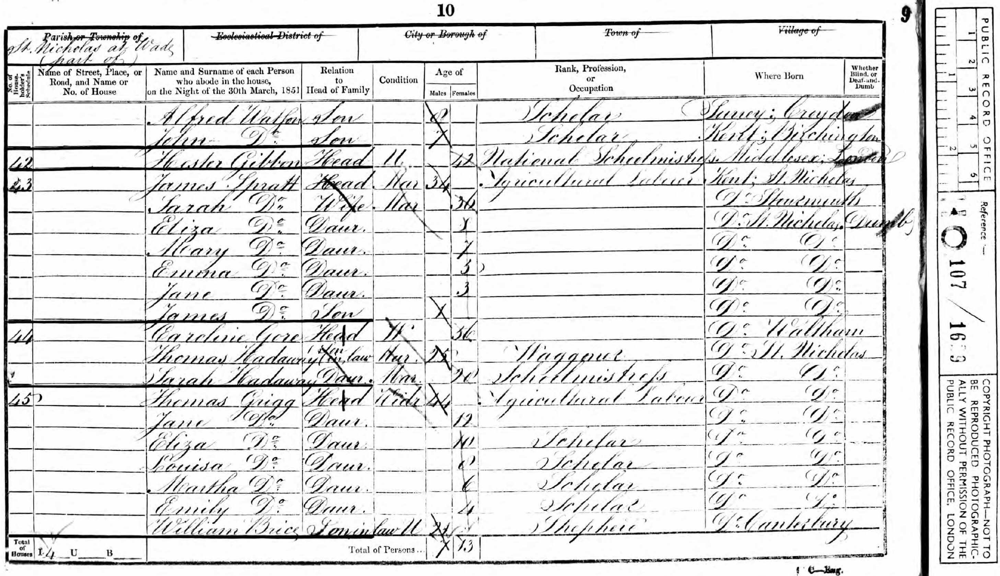

Henry Spain 1807 - 1885
[ Home ] | [ Calendar ] | [ Surnames Index ] | [ Errors ] | [ Family History ]An agricultural labourer and the child of John Spain (a labourer) and Susanna Newport, Henry Spain, the three times great-uncle of Nigel Horne, was born in Stourmouth, Kent, England on 23 Feb 18071,2,3,4,5,6,7, was baptised there at All Saints Church, Church Lane on 26 Apr 1807 and married Mary Miles (with whom he had 7 children: John, Sarah, Jane, William, James Robert, Charles Henry and Ann) at St Mary Magdalene, Monkton, Kent, England on 10 Feb 18278 (From Barry White's data).
During his life, he was living in St Nicholas-at-Wade, Kent, England in 18411; at The Street in St Nicholas-at-Wade on 6 Jun 184113; in St Nicholas-at-Wade on 30 Mar 185110, in 18613 and on 2 Apr 187111; and at The Street in St Nicholas-at-Wade on 3 Apr 188112.
He died in Jan/Feb 1885 in St Nicholas-at-Wade6 and was buried there on 11 Feb 18859.
Parents
- John was born c. 1781
- Susanna was born in 1787
Children
- John was born c. 1829
- Sarah was born c. 1832
- Jane was born c. 1834
- William was born c. 1836
- James Robert was born c. 1838
- Charles Henry was born in 1840
- Ann was born c. 1844
Citations
- 1841 England Census Online publication - Provo, UT, USA: The Generations Network, Inc., 2006.Original data - Census Returns of England and Wales, 1841. Kew, Surrey, England: The National Archives of the UK (TNA): Public Record Office (PRO), 1841. Data imaged from the National (Age: 30)
- 1851 England Census Online publication - Provo, UT, USA: The Generations Network, Inc., 2005.Original data - Census Returns of England and Wales, 1851. Kew, Surrey, England: The National Archives of the UK (TNA): Public Record Office (PRO), 1851. Data imaged from the National
- 1861 England Census Online publication - Provo, UT, USA: The Generations Network, Inc., 2005.Original data - Census Returns of England and Wales, 1861. Kew, Surrey, England: The National Archives of the UK (TNA): Public Record Office (PRO), 1861. Data imaged from the National
- 1871 England Census Online publication - Provo, UT, USA: The Generations Network, Inc., 2004.Original data - Census Returns of England and Wales, 1871. Kew, Surrey, England: The National Archives of the UK (TNA): Public Record Office (PRO), 1871. Data imaged from the National
- 1881 England Census Online publication - Provo, UT, USA: The Generations Network, Inc., 2004. 1881 British Isles Census Index provided by The Church of Jesus Christ of Latter-day Saints © Copyright 1999 Intellectual Reserve, Inc. All rights reserved. All use is subject to the
- England & Wales, FreeBMD Death Index: 1837-1915 Online publication - Provo, UT, USA: The Generations Network, Inc., 2006.Original data - General Register Office. England and Wales Civil Registration Indexes. London, England: General Register Office. © Crown copyright. Published by permission of the Cont
- Kent, England, Tyler Index to Parish Registers, 1538-1874 Online publication - Provo, UT, USA: Ancestry.com Operations, Inc., 2010. This collection was indexed by Ancestry World Archives Project contributors.Original data - Frank Watt Tyler. The Tyler Collection. Canterbury, Kent, England: The Institute of Herald
- Kent, Canterbury Archdeaconry Marriages - Findmypast
- England Deaths & Burials 1538-1991 - Findmypast
- 1851 England, Wales & Scotland Census - Findmypast (was age 43 and the head of the household)
- 1871 England, Wales & Scotland Census - Findmypast (was age 64 and the head of the household)
- 1881 England, Wales & Scotland Census - Findmypast (was age 74 and the head of the household)
- 1841 England, Wales & Scotland Census - Findmypast (was age 30)
Media
1841 UK Census

1851 UK Census

England & Wales deaths 1837-2007 - BMD/D/1885/1/AZ/000366/077
Canterbury Baptisms Transcription - GBPRS-CANT-B-96716003
England Deaths and Burials 1538-1991 Transcription - R_276599092
Kent, Canterbury Archdeaconry marriages 1538-1928 - GBPRS/CANT/M/97159488/1
1851 England, Wales & Scotland Census Transcription - GBC-1851-0005871660
1871 England, Wales & Scotland Census - GBC/1871/0014271840
1881 England, Wales & Scotland Census - GBC/1881/0004821301
1841 England, Wales & Scotland Census - GBC/1841/0013960209
England Births & Baptisms 1538-1975 - R_883903412
Family Tree

Map
Generated by ged2site. Last updated on Jul 3, 2024
Known Issues
Listed in the residence for 1841, but spouse Mary Miles is not
Listed in the residence for 6 Jun 1841, but spouse Mary Miles is not